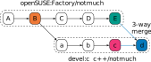
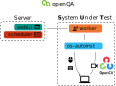
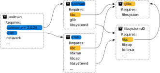

openSUSE: Engineering Stable Rolling Releases with OBS and openQA
who -u
Dan Čermák
| Software Developer @SUSE, SLE BCI Releng | |
| i3 SIG, Package maintainer | |
| Developer Tools, Testing and Documentation, Home Automation | |
| https://dancermak.name | |
| dcermak | |
| @Defolos@mastodon.social |
Why openSUSE?
- RPM based distribution
- unique tech stack: OBS, openQA, zypper
There's a lot of openSUSE
- Tumbleweed
- MicroOS
- Aeon
- Kalpa
- Slow Roll
- Leap
- Leap Micro
The Open Build Service
Projects & Packages
Automated Rebuilds
prjconf
- configure project building & publishing
- tweak macros & dependencies of a project
BuildFlags: sbom:spdx
PublishFlags: withsbom
Macros:
%suse_version 1699
%is_opensuse 1
%build_ldflags %{?_lto_cflags}
:Macros
_link

Repository Assembly?

Test automation
Run the installer every night?
Ain't nobody got time for that (╯°□°)╯︵ ┻━┻

- üëçÔ∏è Test the Happy Path
- üëéÔ∏è CI
- üëéÔ∏è Regression Testing
But wait there's more
Kiwi
 Image Builder
Image Builder
- openSUSE's & SUSE's image builder
- cross distribution support
pbuild
OBS, but on your local box
Packaging Philosophy
- automation > manual
- pragmatism > purity
- a bit less colaboration (but it's getting besser)
The Factory Process
The openSUSE Community
Governance: openSUSE Board
Anything else?
No üôÖ
Heroic Developers and Hidden Angels
Those who do, decide.
Conclusion
Give those that can the tools to achieve greatness
But don't leave the rest behind
Links

Why even build a distribution?
Just pip/npm/cargo install everything!
$ pip3 install pysqlite3
...
Failed to build pysqlite3
Installing collected packages: pysqlite3
Running setup.py install for pysqlite3 ... error
error: subprocess-exited-with-error
× Running setup.py install for pysqlite3 did not run successfully.
oops ü´†
From Sources to an Installer
A long time ago…
$ cat INSTALL
BASIC INSTALLATION
On most Unix systems, you build Emacs by first running the
'configure' shell script. This attempts to deduce the
correct values for various system-dependent variables and
features, and find the directories where certain system
headers and libraries are kept. In a few cases, you may
need to explicitly tell configure where to find some things,
or what options to use.
Ain't nobody got time for that (╯°□°)╯︵ ┻━┻
It starts with packages
RPM packages
The people behind this
Packaging Team
- update packages
- fix build & test issues
- triage bugreports
- backport bugfixes
You said Dependencies?

Dependency Hell üëø
Distribution Assembly

What's in a distribution?
- installation ISOs
- disk & container images
- binary packages
- repositories
The Distribution Building Pipeline
Repository Assembly
The people behind this
Release Engineering
- review package submissions & assign to stagings
- review assembly & integration issues
- review tests & bugs
Build system
The people behind this
Buildservice and Buildops
- develop the build service
- run the infrastructure
Testing/QE

The people behind this
QE & Test tooling Team
- implement test cases
- improve test automation
- review test runs
- verify bugfixes
- manual testing
Infrastructure
- run the infrastructure
- maintain automation
- moderation